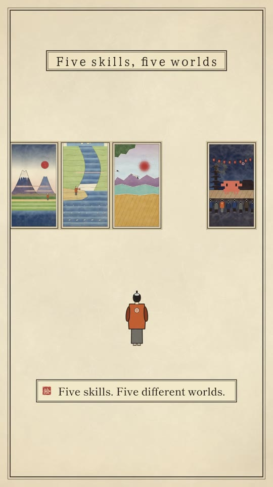
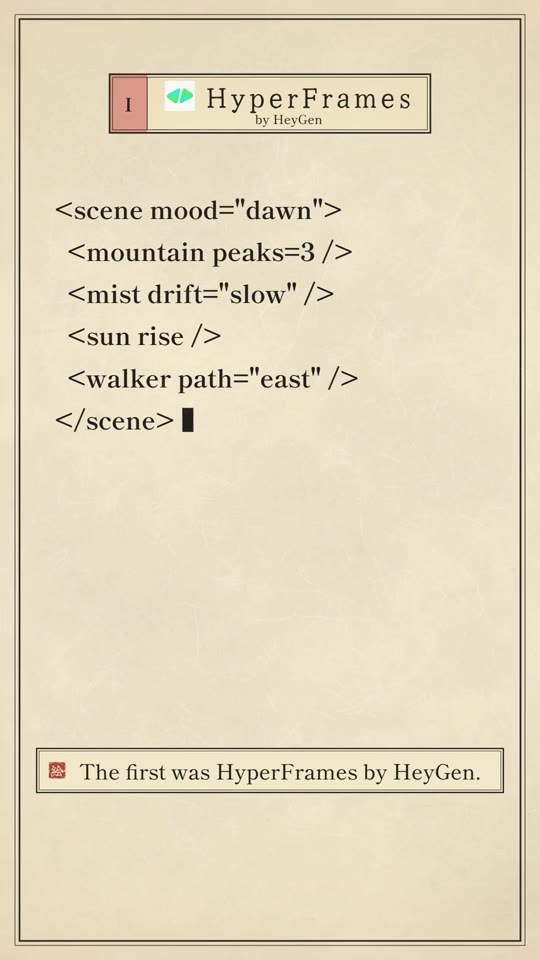
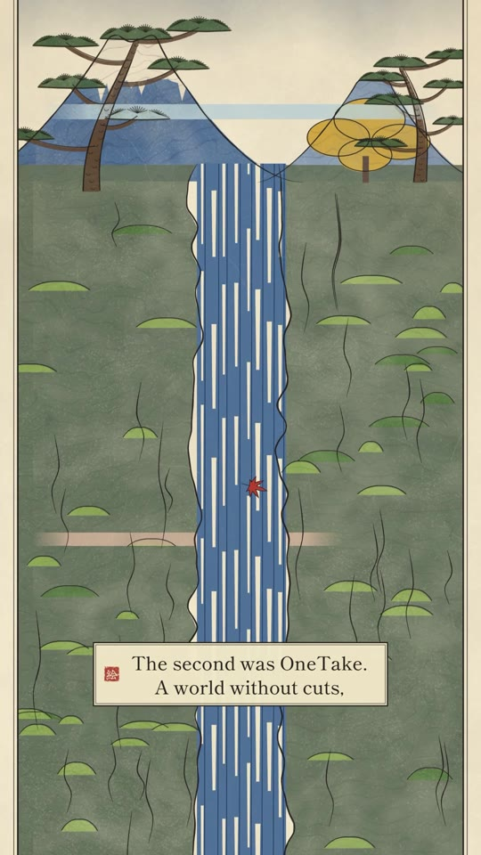
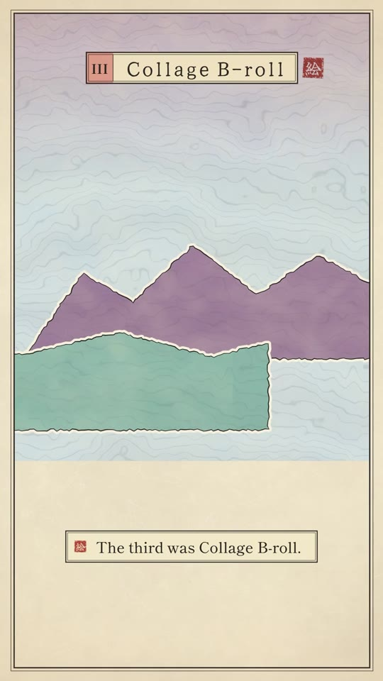
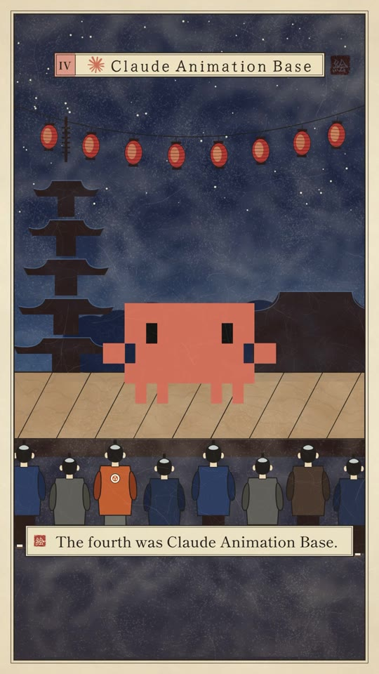
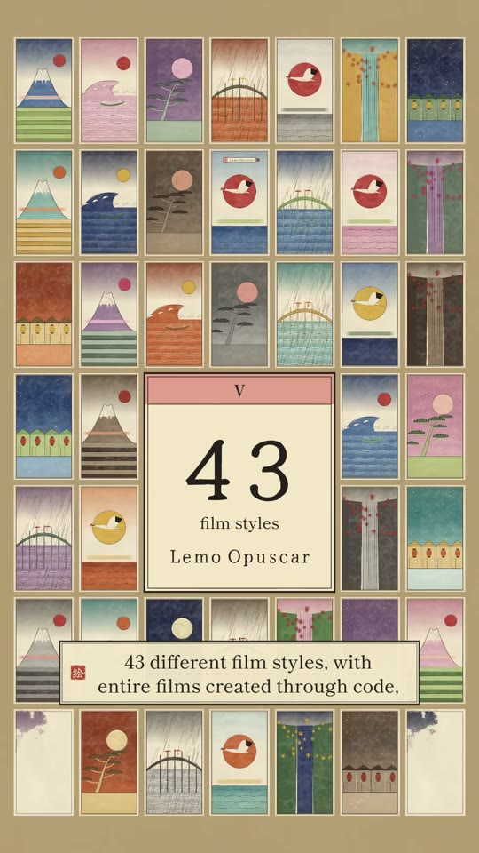

Video-Creation · AI-Explainers
5 Open-Source Claude Motion Graphics Skills: HyperFrames, OneTake, Collage, Animation Base & Lemo Opuscar
An overview of five specialized Claude Code skills engineered for code-driven motion graphics, animated storytelling, and procedural video rendering without traditional diffusion models. By shifting animation synthesis from probabilistic video generators into semantic code (declarative HTML scene tags, infinite one-take vertical camera tracking, paper-cutout collage overlays via Gemini, and 43 procedural film aesthetics), creators achieve character and stylistic consistency impossible in standard generative video models.

The 5 Motion Graphics Skills Breakdown
- Skill 1 — HyperFrames (by HeyGen):
- Core Concept: Transforms declarative semantic HTML/XML markup directly into animated motion graphic compositions.
- Syntax Pattern:
<scene mood="dawn"> <mountain peaks=3 /> <mist drift="slow" /> <sun rise /> <walker path="east" /> </scene> - Function: Claude compiles human-readable tags into procedural SVG path animations and Canvas transitions.
- Skill 2 — OneTake:
- Core Concept: An unbroken, continuous camera movement paradigm with zero cutaways.
- Visual Flow: Tracks seamlessly down vertical scrollscapes (e.g. following a falling maple leaf through mountain waterfalls, rivers, and shores), maintaining unbroken immersion.
- Skill 3 — Collage B-Roll (Powered by Gemini):
- Core Concept: Mixed-media editorial aesthetic fusing torn-paper borders, halftone dot patterns, and vintage print textures.
- Workflow: Google Gemini models generate layered illustration assets, which Claude parses and stacks into multi-plane parallax motion graphics.
- Skill 4 — Claude Animation Base:
- Core Concept: Procedural character rigging and storytelling for Claude’s iconic pixel-art mascot.
- Aesthetic: Retro 8-bit sprites composited onto traditional hand-painted theatrical backdrops and lantern stages.
- Skill 5 — Lemo Opuscar:
- Core Concept: A massive procedural library comprising 43 distinct historical and cinematic film styles.
- Mechanism: Renders full narrative films entirely via code without feeding prompts into black-box video diffusion networks, guaranteeing strict deterministic character identity and timing.
Visual Style Gallery





Verbatim Breakdown
| Timestamp | Screen / Source | Verbatim Content |
|---|---|---|
00:00 |
Spoken (audio) | “Once upon a time, a creator discovered that Claude could make videos. But soon, everyone was using it. And he had one question: If everyone has the same AI, how does he make something different?” |
00:15 |
On-screen subtitles | Then he discovered five skills. And each one opened a completely different world. |
00:21 |
On-screen badge & code | I • HyperFrames by HeyGen <scene mood="dawn"> <mountain peaks=3 /> <mist drift="slow" /> <sun rise /> <walker path="east" /> </scene> “A world where HTML transforms into motion graphics, and code becomes a cinematic story.” |
00:30 |
On-screen subtitles | The second was OneTake. A world without cuts, where the camera never stops moving, and the entire story unfolds in one continuous shot. |
00:39 |
On-screen badge | III • Collage B-roll • with Gemini “The third was Collage B-roll. Where paper cutouts, halftone textures, and layered illustrations come to life, with Google’s Gemini helping create the visuals.” |
00:48 |
On-screen badge | IV • Claude Animation Base “The fourth was Claude Animation Base. Where Claude’s little mascot becomes the star of hand-painted cartoon animations.” |
00:55 |
On-screen badge | V • 43 film styles • Lemo Opuscar “And finally, Lemo Opuscar. 43 different film styles, with entire films created through code, without using a traditional video generation model.” |
01:05 |
On-screen text | Five skills, five worlds. Explore them on GitHub. |
01:13 |
On-screen subtitles | “The future doesn’t belong to the person who uses AI. It belongs to the person who creates something different with it. Don’t just learn AI. Learn what you can create with it.” |
(caption) |
Post Caption | This video was made by Claude. Every animation, every transition, every motion graphic. 👀 The future of video editing isn’t just about editing faster. It’s about rethinking how we create. AI isn’t replacing creativity. It’s changing what’s possible. Would you let AI edit your next video? Comment OPUS and ill share you all Five worlds #claude #claudecode #motiongraphics #vídeoediting #opus |
Comparison: Code-Driven Video vs. Diffusion Models
| Attribute | Code-Driven Motion Graphics (Claude Skills) | Diffusion Models (Runway / Pika / Sora) |
|---|---|---|
| Consistency | 100% deterministic (SVG/CSS parameters preserved) | Probabilistic (faces/objects morph frame-to-frame) |
| Typography | Pixel-perfect native font rendering | Garbled or hallucinated letterforms |
| Pacing Control | Frame-accurate timestamp triggers (e.g. 0.6s rhythm) | Uncontrollable speed ramps and latent drift |
| Cost & Scale | Runs locally / headless servers via standard compute | Expensive per-second GPU generation credits |
Try This
- Experiment with semantic HTML scene scripting: define a scene schema with variables for mood, elements, and animation paths.
- Implement a “OneTake” continuous vertical tracking composition in CSS / Canvas where the camera Y-axis translation is driven by a linear easing curve tied to voiceover duration.
- Use Google Gemini API to generate transparent PNG cutout assets (e.g. paper textures, celestial bodies, historical architecture) and assemble them into a multi-layered parallax collage using CSS transforms.
Open Questions
- Open-source skill discoverability: The reel notes that all five skills are on GitHub, but access links are distributed via automated comment DM response (“Comment OPUS”); searching GitHub topics
claude-skills,claude-code, andhyperframesreveals community mirrors and implementations of declarative canvas rendering tools.